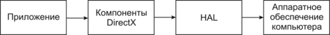
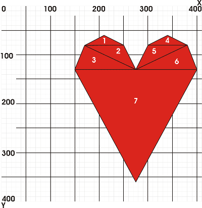

| |
| Off-line версия журнала "Sources.RU Magazine". Выпуск "Сентябрь 2006" | |
|
Программирование: · Создание игр на JavaScript · Делаем свой "pak-explorer" · Многомерная сортировка объектов · Новостная лента на ASP · Красивые ... (трилогия) · Программирование с использованием DirectX9 ПО: · Создание личного веб-сервера Графика/дизайн: · Реалистичные сигареты · Собственный IcoSet |
Программирование с использованием DirectX9Автор: orbПриложение к статье: Справочник использованных функций.
От автора.
ВведениеПричиной появления библиотеки DirectX явилась медлительность стандартных графических средств ОС Windows. Кроме того, разработчику сложно предугадать оборудование пользователя, который будет играть в игру, тем более что в наше время оборудование обновляется чуть ли не каждый день. Выходом из ситуации стала разработка библиотек для работы с графикой. Наиболее популярные - OpenGL и DirectX. Выбора между этими библиотеками делать не будем. Многие специалисты отдают предпочтение OpenGL, другие DirectX. На форумах и конференциях идут обсуждения, перечисляются преимущества и недостатки каждой. OpenGL – Open Graphic Library, открытая графическая библиотека. Термин «открытый» означает «независимый от производителей». Библиотеку OpenGL могут производить разные фирмы и отдельные разработчики, главное, чтобы она удовлетворяла спецификации (стандарту) OpenGL и ряду тестов. Процедуры OpenGL работают как с растровой, так и с векторной графикой и позволяют создавать двух- и трехмерные объекты произвольной формы. Для объекта может быть задан материал и наложена растровая текстура. Объектами сцен также являются источники света. Вдобавок в библиотеке OpenGL имеются средства взаимодействия графических объектов, которые позволяют создавать эффекты прозрачности, тумана, смешивания цветов, выполнять логические операции над объектами, передвигать объекты сцены, лампы и камеры по заданным траекториям и т.д. DirectX – это мультимедийная библиотека, позволяющая напрямую работать с аппаратным обеспечением компьютера в обход традиционных средств платформы Win32. Вся DirectX делится на компоненты, отвечающие за ту или иную часть работы библиотеки: DirectX Graphics – объединяет компоненты DirectDraw и Direct3D для работы с двух- и трёхмерной графикой. Библиотека спроектирована так, что она может использовать все аппаратные возможности видеокарты по обработке графики. Если какие-то требуемые возможности не реализованы аппаратно, то они эмулируются программно.DirectInput – взаимодействие с устройствами ввода (мышь, клавиатура, джойстик, руль, ....). DirectAudio – объединяет компоненты DirectMusic и DirectSound. Компонент предназначен для работы с устройствами воспроизведения звука, работает значительно быстрее стандартных MCI-функций Windows, позволяет синхронизировать происходящее на экране со звуковыми эффектами, дает возможность замедлять и ускорять воспроизведение, смешивать звуки, создавать объемные звуковые эффекты. DirectPlay – сетевая связь между компьютерами. DirectShow – программирование мультимедийных приложений, обеспечивает высококачественный захват и проигрывание мультимедийных потоков данных. DirectSetup – инсталляция компонентов DirectX. Рассмотрим подробнее DirectX.DirectX включает в себя уровень абстракции – HAL (Hardware Abstraction Layer). С помощью HAL происходит взаимодействие приложения с оборудованием компьютера, вне зависимости от изготовителя оборудования. Это дает возможность написанному коду работать на любом аппаратном обеспечении без внесения параметров этого оборудования.  Вся библиотека DirectX построена на основе СОМ (Component Object Model). Вам не придется углубляться в сущность этой технологии, так как вся работа с СОМ основана на вызовах соответствующих функций. В составе СОМ имеется API, называемая СОМ-библиотекой; с её помощью достигается управление всеми компонентами. Каждый из программных компонентов реализует определенное количество СОМ-объектов, доступ к которым осуществляется посредством интерфейсов, которые, в свою очередь состоят из функций. С помощью этих функций и происходит взаимодействие с СОМ-объектом. Построение сценыПрежде чем начать программировать, нужно четко представлять схему построения сцены.
Создание оконного приложенияПрежде чем приступить к программированию графики с помощью DirectX, необходимо создать каркас программы. Каркас приложения это самое простое Windows приложение, его описание пропустим из-за того, что оно рассмотрено во всех книгах программирования под Windows, и описание можно найти на многих сайтах в Интернете. Главное отличие - это вывод на экран, мы не используем сообщение
while(msg.message!=WM_QUIT)
{
if(PeekMessage(&msg, NULL, 0, 0, PM_REMOVE))
{
TranslateMessage(&msg);
DispatchMessage(&msg);
}else
RenderScene();
}
Создаем цикл, выход из которого возможен при получении сообщения Инициализация DirectXДля начала необходимо подключить заголовочный файл. #pragma comment(lib, "d3d9.lib") Создадим функцию, в которой будут инициализироваться интерфейсы DirectX: bool InitDirectX(void). Создаем глобальные переменные: Для удобства создадим функцию
bool InitDirectX(void)
{
if((pDirect3D=Direct3DCreate9(D3D_SDK_VERSION)) == NULL)
return(false);
D3DDISPLAYMODE stDisplay;
if(FAILED(pDirect3D->GetAdapterDisplayMode(D3DADAPTER_DEFAULT, &stDisplay)))
return(false);
D3DPRESENT_PARAMETERS Direct3DParametr;
ZeroMemory(&Direct3DParametr, sizeof(Direct3DParametr));
Direct3DParametr.Windowed=TRUE;
Direct3DParametr.SwapEffect=D3DSWAPEFFECT_DISCARD;
Direct3DParametr.BackBufferFormat=stDisplay.Format;
if(FAILED(pDirect3D->CreateDevice(D3DADAPTER_DEFAULT, D3DDEVTYPE_HAL,
hWnd, D3DCREATE_HARDWARE_VERTEXPROCESSING, &Direct3DParametr, &pDirectDevice)))
return(false);
return(true);
}
pDirect3D=Direct3DCreate9(D3D_SDK_VERSION) - создается основной указатель на интерфейс IDirect3D9. Всегда используется один макрос D3D_SDK_VERSION, указывающий на текущую версию SDK.
Для проверки результата выполнения функции используется макрос
if(FAILED(…))
{ сбой }
else
{ функция выполнена успешно }
также можно использовать макрос SUCCEEDED, по такой схеме
if(SUCCEEDED(…))
{ функция выполнена успешно }
else
{ сбой }
Теперь нужно получить текущие параметры дисплея с помощью функции Direct3DParametr.Windowed=TRUE; - оконный режим работы приложения.Direct3DParametr.SwapEffect=D3DSWAPEFFECT_DISCARD; - не использовать буфера обмена.Direct3DParametr.BackBufferFormat=stDisplay.Format; - формат видеорежима заднего буфера устанавливаем равным текущему видеорежиму.
Создаем объект интерфейса D3DADAPTER_DEFAULT - текущая видеокарта (обычно в системе установлена 1 видеокарта).D3DDEVTYPE_HAL - выбор способа обработки информации, с помощью видеокарты.hWnd - дескриптор главного окна.D3DCREATE_HARDWARE_VERTEXPROCESSING – способ обработки вершин (в данном случае аппаратно). Можно использовать значение D3DCREATE_SOFTWARE_VERTEXPROCESSING – программная обработка вершин (при использовании старых видеокарт).&Direct3DParametr - параметры видеорежима.&pDirectDevice - результат операции, указатель на только что созданный объект.
Функция для рендеринга сценыВ этой части кода происходит вывод изображения на экран
void RenderScene(void)
{
if(pDirectDevice==NULL)
return;
pDirectDevice->Clear(0, NULL, D3DCLEAR_TARGET, D3DCOLOR_XRGB(0, 192, 0), 1.0f, 0);
pDirectDevice->BeginScene();
pDirectDevice->EndScene();
pDirectDevice->Present(NULL, NULL, NULL, NULL);
}
Сначала необходимо очистить задний буфер и заполнить все пространство одним цветом: Clear(0, NULL, D3DCLEAR_TARGET, D3DCOLOR_XRGB(0, 192, 0), 1.0f, 0)Создание сцены происходит между строками: pDirectDevice->BeginScene(); pDirectDevice->EndScene();Все что в этом блоке, прорисовывается в заднем буфере. Теперь осталось вывести содержимое заднего буфера на экран: pDirectDevice->Present(NULL, NULL, NULL, NULL) На данный момент у нас есть полностью работоспособная оболочка для создания 3D приложения. Создать новый проект Win32, Empty и добавить этот файл (window1.cpp). Можно компилировать и запускать (для выхода нужно нажать любую клавишу). Так как мы ничего не рисовали, то на экране нет ни одного объекта. Все что было проделано это инициализация устройств и очистка экрана в темно-зеленый цвет. Насладившись результатами работы, нажимаем любую кнопку для выхода из программы и приступаем к рисованию объектов. Создание объектаЕсли посмотреть на схему создания 3D сцены, получится что пропущены шаги - создание объекта и применение материалов с освещением. Освещение и материалы прибережем на следующую статью, а объект создать нужно!  Получилось 7 треугольников. Каждый треугольник имеет кроме координат 3х вершин еще и параметр преобразования и цвет вершины, поэтому создадим структуру, которая будет определять все характеристики вершин:
struct CUSTOMVERTEX //формат вершин
{
FLOAT x, y, z, rhw;
DWORD color;
};
С помощью строки: #define D3DFVF_CUSTOMVERTEX (D3DFVF_XYZRHW|D3DFVF_DIFFUSE)описывается формат содержания вершин в отдельном потоке данных. Здесь применяется гибкий формат вершин – FVF (Flexible Vertex Format). Все перечисленные элементы совпадают с объявленными в структуре. D3DFVF_DIFFUSE – указывает на то, что применяется цветовая составляющая с рассеянным цветом.Всю работу по подготовке буфера будем делать в отдельной функции: bool InitBufferVertex(void);Все вершины будут храниться в буфере вершин. При заполнении буфера данными его необходимо предварительно заблокировать, после заполнения данным – разблокировать. Определяем указатель на буфер вершин: LPDIRECT3DVERTEXBUFFER9 pBufferVertex=NULL;И введем координаты всех вершин в формате структуры:
Создаем буфер вершин: CreateVertexBuffer(21*sizeof(CUSTOMVERTEX), 0, D3DFVF_CUSTOMVERTEX, D3DPOOL_DEFAULT, &pBufferVertex, NULL) указываем размер, формат и передаем указатель, где будет храниться информация. if(FAILED(pBufferVertex->Lock(0, sizeof(stVertex), (void**)&pBV, 0))) return(false); memcpy(pBV, stVertex, sizeof(stVertex)); pBufferVertex->Unlock(); //разблокировать буфер для дальнейшей работы Рендеринг объектаВывод всех объектов сцены на экран происходит в функции рендеринга между строками pDirectDevice->BeginScene(); pDirectDevice->EndScene(); Заполним этот промежуток. SetStreamSource(0, pBufferVertex, 0, sizeof(CUSTOMVERTEX)); SetFVF(D3DFVF_CUSTOMVERTEX); // задаем формат вершин Выводим объект, для этого используем функцию вывода примитивов (примитив – любая геометрическая фигура).
DrawPrimitive(D3DPT_TRIANGLELIST, // что рисовать
0, // индекс первой вершины
7 // количество выводимых объектов
);
Готово!!! (листинг программы heart.cpp) Примечание: При написании статьи я умышленно опустил детальное описание функций, что бы не нагружать ненужной пока информацией. Полное описание использованных функций можно найти в приложении к статье или других источниках, например, MSDN. Для усвоения материала предлагаю выполнить небольшое задание: Нарисовать круг смайлик, результаты можно выложить на форуме. |
||||||||||||||||||||||||||||||||||||||||||||||||||||||||||||||||||||||||||||||||||||||||
| Журнал "Исходники.RU". Copyright (c) 2004 by Исходники.RU. Designed by Mastilior. |